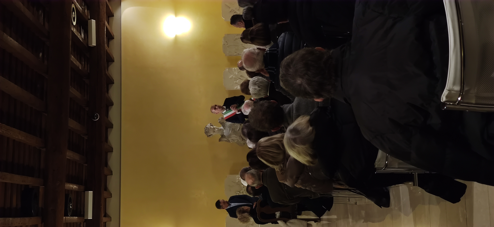

Benemerenza
La serata del 7 dicembre 2023 è stata un momento di grande riconoscimento per l'A.S.D. Ginnastica Meda. Il presidente Angelo Buraschi ha ricevuto la pergamena di benemerenza e una medaglia dal Comune di Meda, insieme al vicepresidente Renato Amadeo e al direttore tecnico Maurizio Allievi.